2025 Advanced Higher Chemistry marking instructions
Source: Scottish Qualifications Authority (SQA) / Qualifications Scotland. This is a StemInteract HTML companion, not an official HTML edition. Selectable text is supplied alongside original page images. Use the images or original PDF for equations, powers, fractions, vector notation, tables and diagrams; text extraction cannot fully preserve mathematical layout.
Jump to a question
PDF page 1
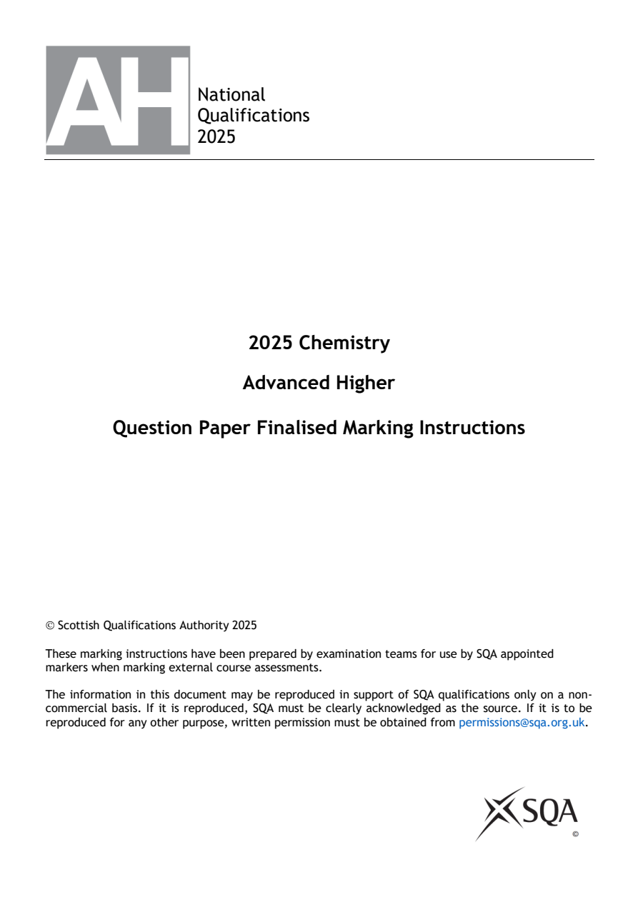
Selectable page text
National
Qualifications
2025
2025 Chemistry
Advanced Higher
Question Paper Finalised Marking Instructions
© Scottish Qualifications Authority 2025
These marking instructions have been prepared by examination teams for use by SQA appointed
markers when marking external course assessments.
The information in this document may be reproduced in support of SQA qualifications only on a non-
commercial basis. If it is reproduced, SQA must be clearly acknowledged as the source. If it is to be
reproduced for any other purpose, written permission must be obtained from permissions@sqa.org.uk.PDF page 2
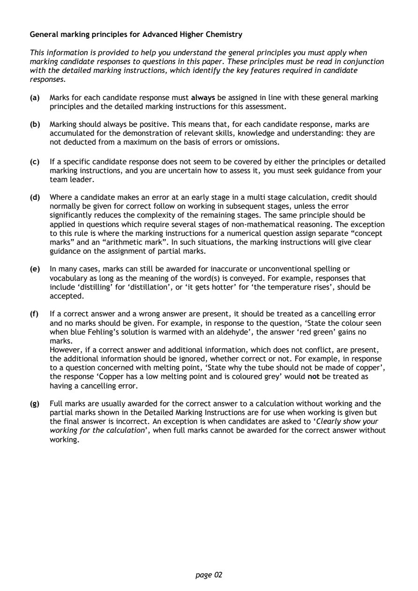
Selectable page text
General marking principles for Advanced Higher Chemistry
This information is provided to help you understand the general principles you must apply when
marking candidate responses to questions in this paper. These principles must be read in conjunction
with the detailed marking instructions, which identify the key features required in candidate
responses.
(a) Marks for each candidate response must always be assigned in line with these general marking
principles and the detailed marking instructions for this assessment.
(b) Marking should always be positive. This means that, for each candidate response, marks are
accumulated for the demonstration of relevant skills, knowledge and understanding: they are
not deducted from a maximum on the basis of errors or omissions.
(c) If a specific candidate response does not seem to be covered by either the principles or detailed
marking instructions, and you are uncertain how to assess it, you must seek guidance from your
team leader.
(d) Where a candidate makes an error at an early stage in a multi stage calculation, credit should
normally be given for correct follow on working in subsequent stages, unless the error
significantly reduces the complexity of the remaining stages. The same principle should be
applied in questions which require several stages of non-mathematical reasoning. The exception
to this rule is where the marking instructions for a numerical question assign separate “concept
marks” and an “arithmetic mark”. In such situations, the marking instructions will give clear
guidance on the assignment of partial marks.
(e) In many cases, marks can still be awarded for inaccurate or unconventional spelling or
vocabulary as long as the meaning of the word(s) is conveyed. For example, responses that
include ‘distilling’ for ‘distillation’, or ‘it gets hotter’ for ‘the temperature rises’, should be
accepted.
(f) If a correct answer and a wrong answer are present, it should be treated as a cancelling error
and no marks should be given. For example, in response to the question, ‘State the colour seen
when blue Fehling’s solution is warmed with an aldehyde’, the answer ‘red green’ gains no
marks.
However, if a correct answer and additional information, which does not conflict, are present,
the additional information should be ignored, whether correct or not. For example, in response
to a question concerned with melting point, ‘State why the tube should not be made of copper’,
the response ‘Copper has a low melting point and is coloured grey’ would not be treated as
having a cancelling error.
(g) Full marks are usually awarded for the correct answer to a calculation without working and the
partial marks shown in the Detailed Marking Instructions are for use when working is given but
the final answer is incorrect. An exception is when candidates are asked to ‘Clearly show your
working for the calculation’, when full marks cannot be awarded for the correct answer without
working.
page 02PDF page 3
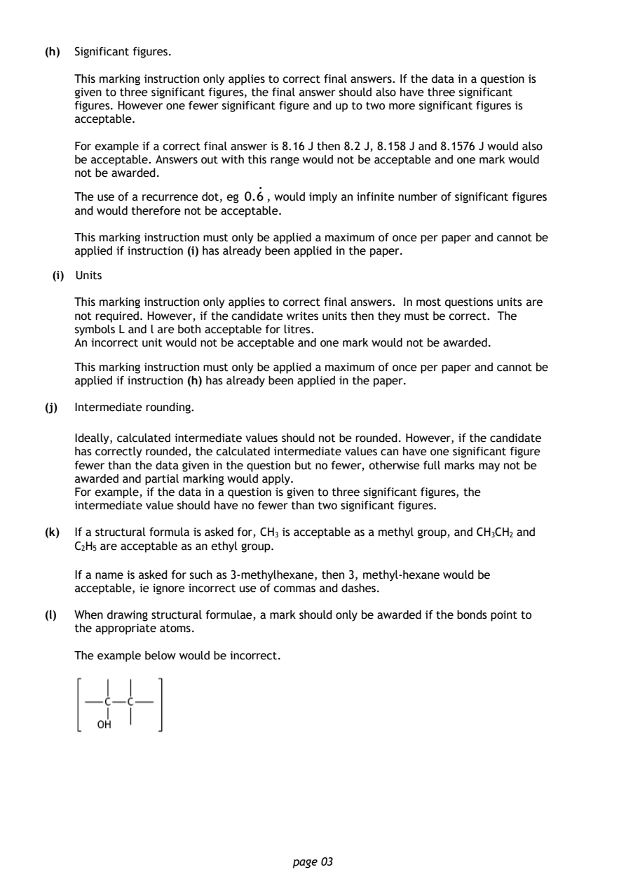
Selectable page text
(h) Significant figures.
This marking instruction only applies to correct final answers. If the data in a question is
given to three significant figures, the final answer should also have three significant
figures. However one fewer significant figure and up to two more significant figures is
acceptable.
For example if a correct final answer is 8.16 J then 8.2 J, 8.158 J and 8.1576 J would also
be acceptable. Answers out with this range would not be acceptable and one mark would
not be awarded.
.
The use of a recurrence dot, eg 0.6, would imply an infinite number of significant figures
and would therefore not be acceptable.
This marking instruction must only be applied a maximum of once per paper and cannot be
applied if instruction (i) has already been applied in the paper.
(i) Units
This marking instruction only applies to correct final answers. In most questions units are
not required. However, if the candidate writes units then they must be correct. The
symbols L and l are both acceptable for litres.
An incorrect unit would not be acceptable and one mark would not be awarded.
This marking instruction must only be applied a maximum of once per paper and cannot be
applied if instruction (h) has already been applied in the paper.
(j) Intermediate rounding.
Ideally, calculated intermediate values should not be rounded. However, if the candidate
has correctly rounded, the calculated intermediate values can have one significant figure
fewer than the data given in the question but no fewer, otherwise full marks may not be
awarded and partial marking would apply.
For example, if the data in a question is given to three significant figures, the
intermediate value should have no fewer than two significant figures.
(k) If a structural formula is asked for, CH₃ is acceptable as a methyl group, and CH₃CH₂ and
C₂H₅ are acceptable as an ethyl group.
If a name is asked for such as 3-methylhexane, then 3, methyl-hexane would be
acceptable, ie ignore incorrect use of commas and dashes.
(l) When drawing structural formulae, a mark should only be awarded if the bonds point to
the appropriate atoms.
The example below would be incorrect.
page 03PDF page 4
Paper 1, Question 1Paper 1, Question 2Paper 1, Question 3Paper 1, Question 4Paper 1, Question 5Paper 1, Question 6Paper 1, Question 7Paper 1, Question 8Paper 1, Question 9Paper 1, Question 10Paper 1, Question 11Paper 1, Question 12Paper 1, Question 13Paper 1, Question 14Paper 1, Question 15Paper 1, Question 16Paper 1, Question 17Paper 1, Question 18Paper 1, Question 19Paper 1, Question 20Paper 1, Question 21Paper 1, Question 22Paper 1, Question 23Paper 1, Question 24Paper 1, Question 25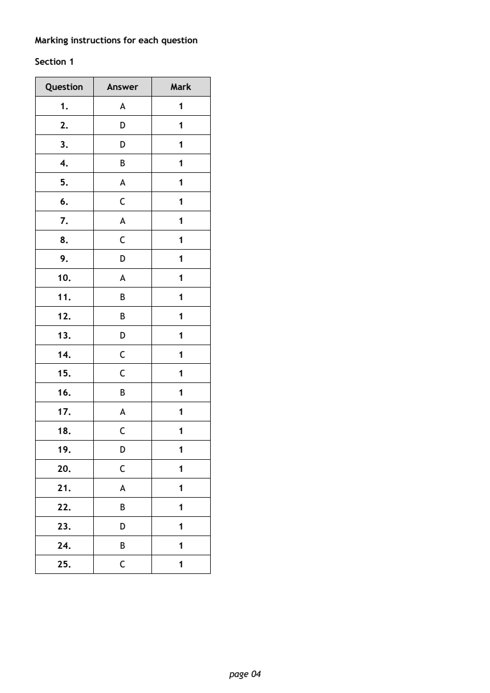
Selectable page text
Marking instructions for each question
Section 1
Question Answer Mark
1. A 1
2. D 1
3. D 1
4. B 1
5. A 1
6. C 1
7. A 1
8. C 1
9. D 1
10. A 1
11. B 1
12. B 1
13. D 1
14. C 1
15. C 1
16. B 1
17. A 1
18. C 1
19. D 1
20. C 1
21. A 1
22. B 1
23. D 1
24. B 1
25. C 1
page 04PDF page 5
Paper 2, Question 1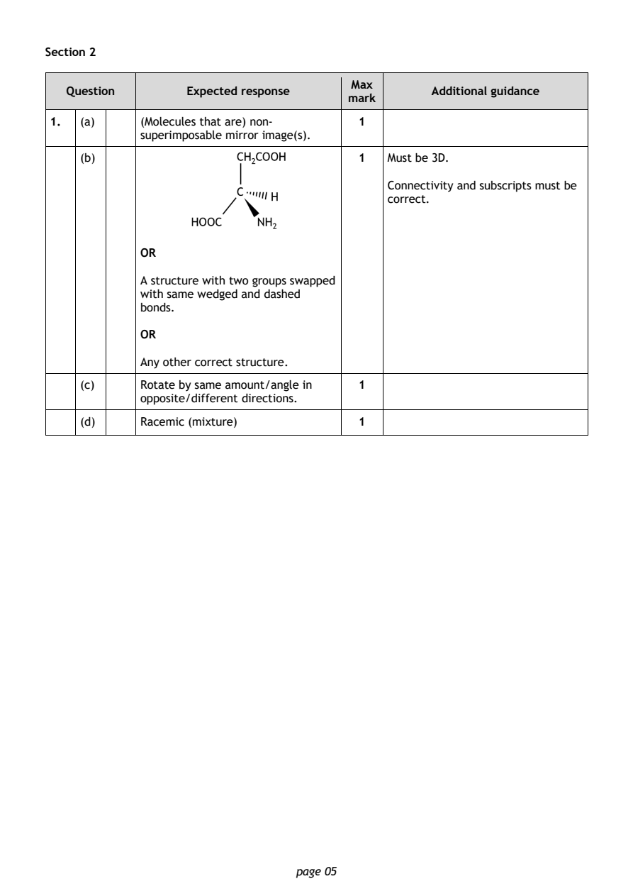
Selectable page text
Section 2
Max
Question Expected response Additional guidance
mark
1. (a) (Molecules that are) non- 1
superimposable mirror image(s).
(b) 1 Must be 3D.
Connectivity and subscripts must be
correct.
OR
A structure with two groups swapped
with same wedged and dashed
bonds.
OR
Any other correct structure.
(c) Rotate by same amount/angle in 1
opposite/different directions.
(d) Racemic (mixture) 1
page 05PDF page 6
Paper 2, Question 2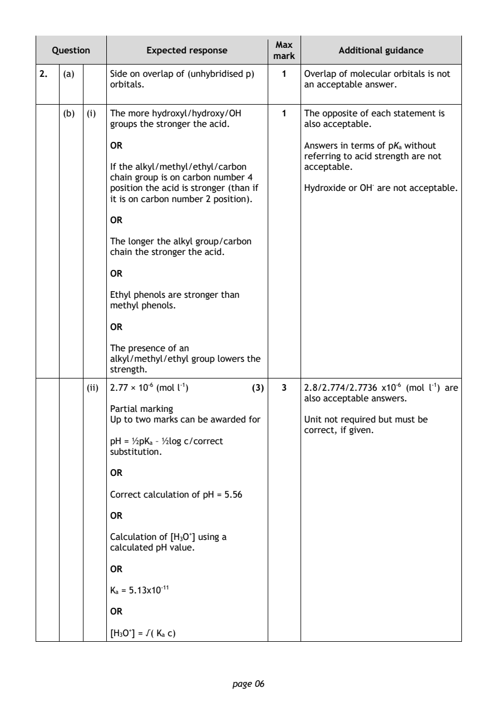
Selectable page text
Max
Question Expected response Additional guidance
mark
2. (a) Side on overlap of (unhybridised p) 1 Overlap of molecular orbitals is not
orbitals. an acceptable answer.
(b) (i) The more hydroxyl/hydroxy/OH 1 The opposite of each statement is
groups the stronger the acid. also acceptable.
OR Answers in terms of pK without
referring to acid streng^{a}th are not
If the alkyl/methyl/ethyl/carbon acceptable.
chain group is on carbon number 4
position the acid is stronger (than if Hydroxide or OH⁻ are not acceptable.
it is on carbon number 2 position).
OR
The longer the alkyl group/carbon
chain the stronger the acid.
OR
Ethyl phenols are stronger than
methyl phenols.
OR
The presence of an
alkyl/methyl/ethyl group lowers the
strength.
(ii) 2.77 × 10⁻⁶ (mol l⁻¹) (3) 3 2.8/2.774/2.7736 x10⁻⁶ (mol l⁻¹) are
also acceptable answers.
Partial marking
Up to two marks can be awarded for Unit not required but must be
correct, if given.
pH = ½pK – ½log c/correct
substitutio^{a}n.
OR
Correct calculation of pH = 5.56
OR
Calculation of [H₃O⁺] using a
calculated pH value.
OR
K = 5.13x10⁻¹¹
a
OR
[H₃O⁺] = √( K c)
a
page 06PDF page 7
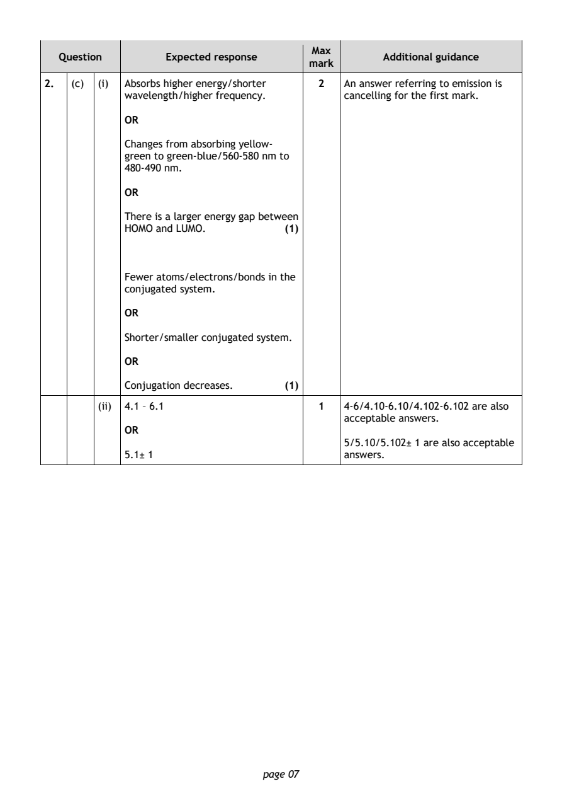
Selectable page text
Max
Question Expected response Additional guidance
mark
2. (c) (i) Absorbs higher energy/shorter 2 An answer referring to emission is
wavelength/higher frequency. cancelling for the first mark.
OR
Changes from absorbing yellow-
green to green-blue/560-580 nm to
480-490 nm.
OR
There is a larger energy gap between
HOMO and LUMO. (1)
Fewer atoms/electrons/bonds in the
conjugated system.
OR
Shorter/smaller conjugated system.
OR
Conjugation decreases. (1)
(ii) 4.1 – 6.1 1 4-6/4.10-6.10/4.102-6.102 are also
acceptable answers.
OR
5/5.10/5.102± 1 are also acceptable
5.1± 1 answers.
page 07PDF page 8
Paper 2, Question 3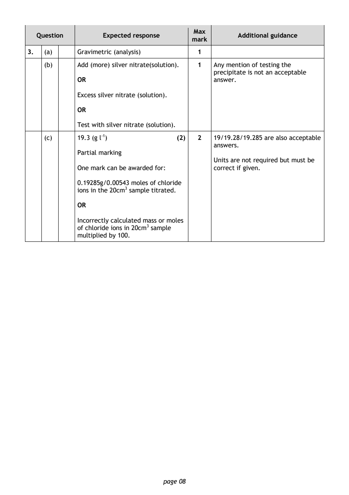
Selectable page text
Max
Question Expected response Additional guidance
mark
3. (a) Gravimetric (analysis) 1
(b) Add (more) silver nitrate(solution). 1 Any mention of testing the
precipitate is not an acceptable
OR answer.
Excess silver nitrate (solution).
OR
Test with silver nitrate (solution).
(c) 19.3 (g l⁻¹) (2) 2 19/19.28/19.285 are also acceptable
answers.
Partial marking
Units are not required but must be
One mark can be awarded for: correct if given.
0.19285g/0.00543 moles of chloride
ions in the 20cm³ sample titrated.
OR
Incorrectly calculated mass or moles
of chloride ions in 20cm³ sample
multiplied by 100.
page 08PDF page 9
Paper 2, Question 4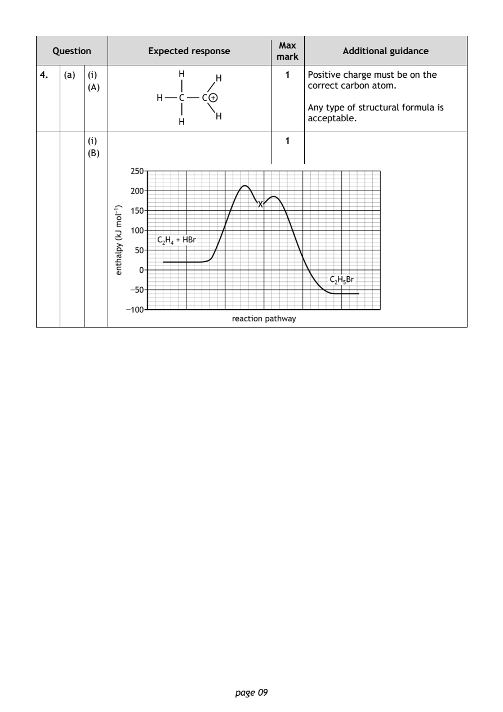
Selectable page text
Max
Question Expected response Additional guidance
mark
4. (a) (i) 1 Positive charge must be on the
(A) correct carbon atom.
Any type of structural formula is
acceptable.
(i) 1
(B)
page 09PDF page 10
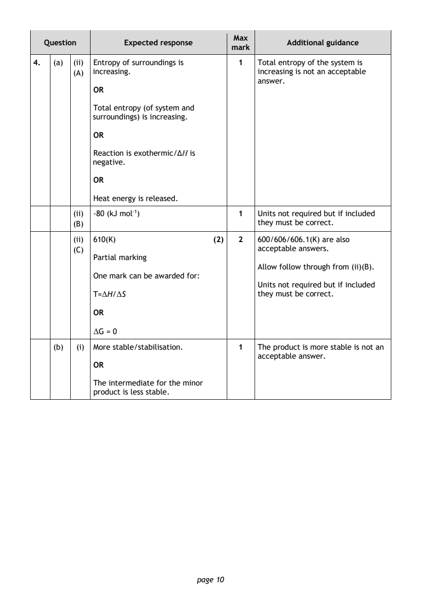
Selectable page text
Max
Question Expected response Additional guidance
mark
4. (a) (ii) Entropy of surroundings is 1 Total entropy of the system is
(A) increasing. increasing is not an acceptable
answer.
OR
Total entropy (of system and
surroundings) is increasing.
OR
Reaction is exothermic/ΔH is
negative.
OR
Heat energy is released.
(ii) -80 (kJ mol⁻¹) 1 Units not required but if included
(B) they must be correct.
(ii) 610(K) (2) 2 600/606/606.1(K) are also
(C) acceptable answers.
Partial marking
Allow follow through from (ii)(B).
One mark can be awarded for:
Units not required but if included
T=ΔH/ΔS they must be correct.
OR
ΔG = 0
(b) (i) More stable/stabilisation. 1 The product is more stable is not an
acceptable answer.
OR
The intermediate for the minor
product is less stable.
page 10PDF page 11
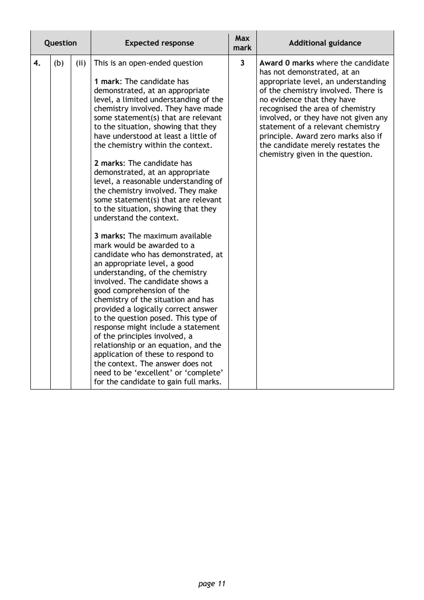
Selectable page text
Max
Question Expected response Additional guidance
mark
4. (b) (ii) This is an open-ended question 3 Award 0 marks where the candidate
has not demonstrated, at an
1 mark: The candidate has appropriate level, an understanding
demonstrated, at an appropriate of the chemistry involved. There is
level, a limited understanding of the no evidence that they have
chemistry involved. They have made recognised the area of chemistry
some statement(s) that are relevant involved, or they have not given any
to the situation, showing that they statement of a relevant chemistry
have understood at least a little of principle. Award zero marks also if
the chemistry within the context. the candidate merely restates the
chemistry given in the question.
2 marks: The candidate has
demonstrated, at an appropriate
level, a reasonable understanding of
the chemistry involved. They make
some statement(s) that are relevant
to the situation, showing that they
understand the context.
3 marks: The maximum available
mark would be awarded to a
candidate who has demonstrated, at
an appropriate level, a good
understanding, of the chemistry
involved. The candidate shows a
good comprehension of the
chemistry of the situation and has
provided a logically correct answer
to the question posed. This type of
response might include a statement
of the principles involved, a
relationship or an equation, and the
application of these to respond to
the context. The answer does not
need to be ‘excellent’ or ‘complete’
for the candidate to gain full marks.
page 11PDF page 12
Paper 2, Question 5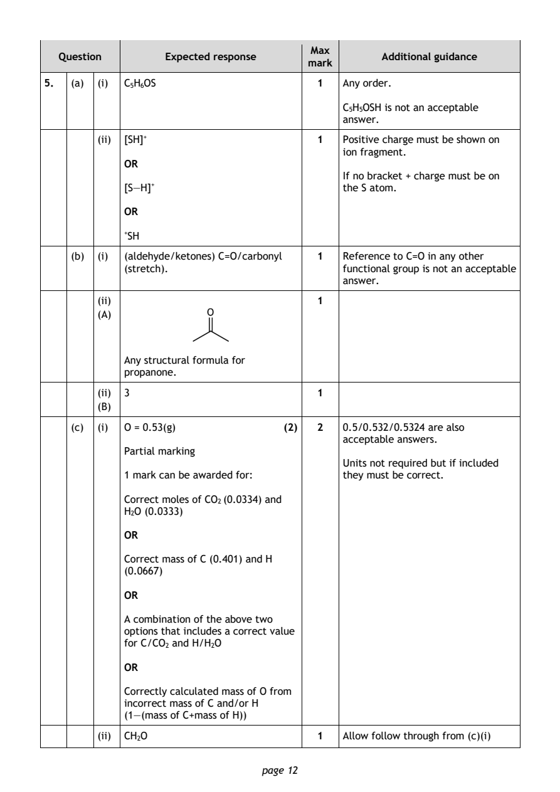
Selectable page text
Max
Question Expected response Additional guidance
mark
5. (a) (i) C₅H₆OS 1 Any order.
C₅H₅OSH is not an acceptable
answer.
(ii) [SH]⁺ 1 Positive charge must be shown on
ion fragment.
OR
If no bracket + charge must be on
[S—H]⁺ the S atom.
OR
+SH
(b) (i) (aldehyde/ketones) C=O/carbonyl 1 Reference to C=O in any other
(stretch). functional group is not an acceptable
answer.
(ii) 1
(A)
Any structural formula for
propanone.
(ii) 3 1
(B)
(c) (i) O = 0.53(g) (2) 2 0.5/0.532/0.5324 are also
acceptable answers.
Partial marking
Units not required but if included
1 mark can be awarded for: they must be correct.
Correct moles of CO₂ (0.0334) and
H₂O (0.0333)
OR
Correct mass of C (0.401) and H
(0.0667)
OR
A combination of the above two
options that includes a correct value
for C/CO₂ and H/H₂O
OR
Correctly calculated mass of O from
incorrect mass of C and/or H
(1—(mass of C+mass of H))
(ii) CH₂O 1 Allow follow through from (c)(i)
page 12PDF page 13
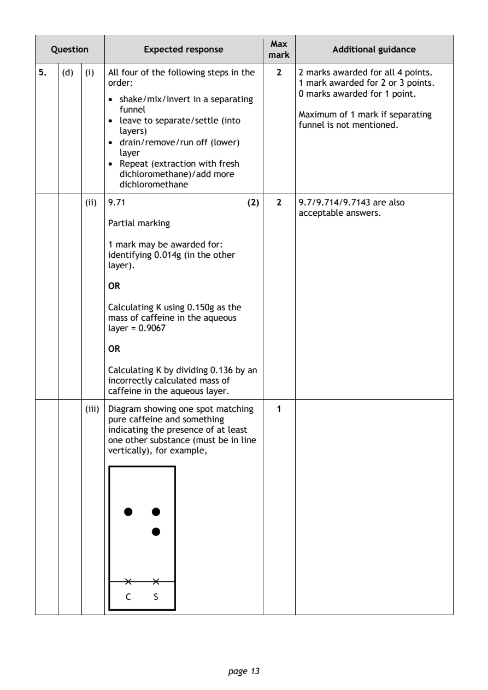
Selectable page text
Max
Question Expected response Additional guidance
mark
5. (d) (i) All four of the following steps in the 2 2 marks awarded for all 4 points.
order: 1 mark awarded for 2 or 3 points.
0 marks awarded for 1 point.
• shake/mix/invert in a separating
funnel
Maximum of 1 mark if separating
• leave to separate/settle (into
funnel is not mentioned.
layers)
• drain/remove/run off (lower)
layer
• Repeat (extraction with fresh
dichloromethane)/add more
dichloromethane
(ii) 9.71 (2) 2 9.7/9.714/9.7143 are also
acceptable answers.
Partial marking
1 mark may be awarded for:
identifying 0.014g (in the other
layer).
OR
Calculating K using 0.150g as the
mass of caffeine in the aqueous
layer = 0.9067
OR
Calculating K by dividing 0.136 by an
incorrectly calculated mass of
caffeine in the aqueous layer.
(iii) Diagram showing one spot matching 1
pure caffeine and something
indicating the presence of at least
one other substance (must be in line
vertically), for example,
page 13PDF page 14
Paper 2, Question 6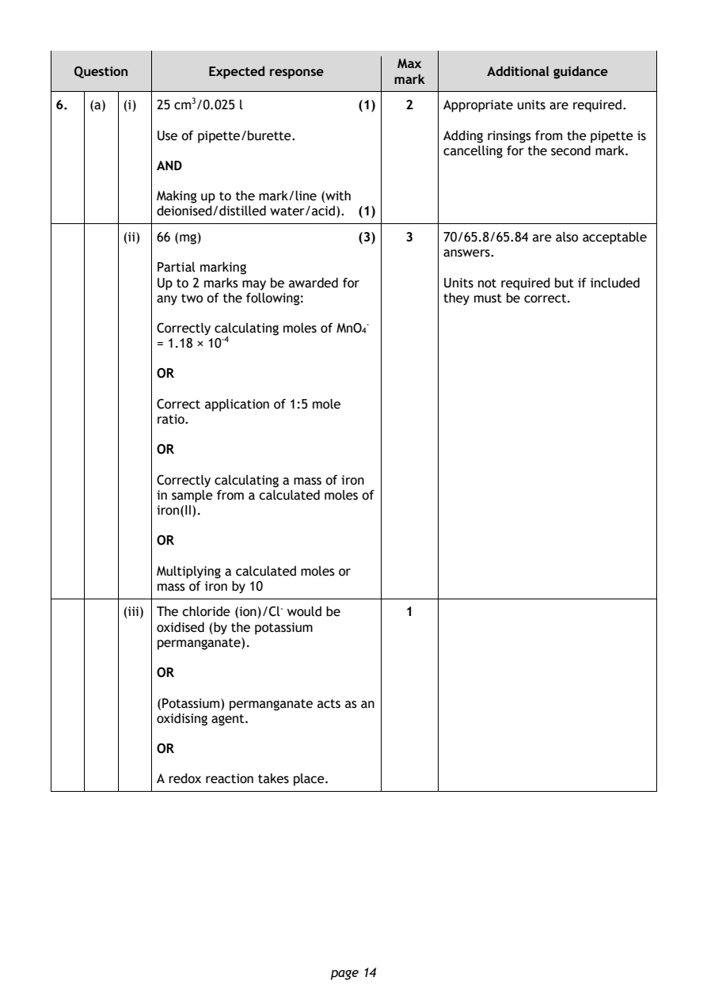
Selectable page text
Max
Question Expected response Additional guidance
mark
6. (a) (i) 25 cm³/0.025 l (1) 2 Appropriate units are required.
Use of pipette/burette. Adding rinsings from the pipette is
cancelling for the second mark.
AND
Making up to the mark/line (with
deionised/distilled water/acid). (1)
(ii) 66 (mg) (3) 3 70/65.8/65.84 are also acceptable
answers.
Partial marking
Up to 2 marks may be awarded for Units not required but if included
any two of the following: they must be correct.
Correctly calculating moles of MnO₄⁻
= 1.18 × 10⁻⁴
OR
Correct application of 1:5 mole
ratio.
OR
Correctly calculating a mass of iron
in sample from a calculated moles of
iron(II).
OR
Multiplying a calculated moles or
mass of iron by 10
(iii) The chloride (ion)/Cl⁻ would be 1
oxidised (by the potassium
permanganate).
OR
(Potassium) permanganate acts as an
oxidising agent.
OR
A redox reaction takes place.
page 14PDF page 15
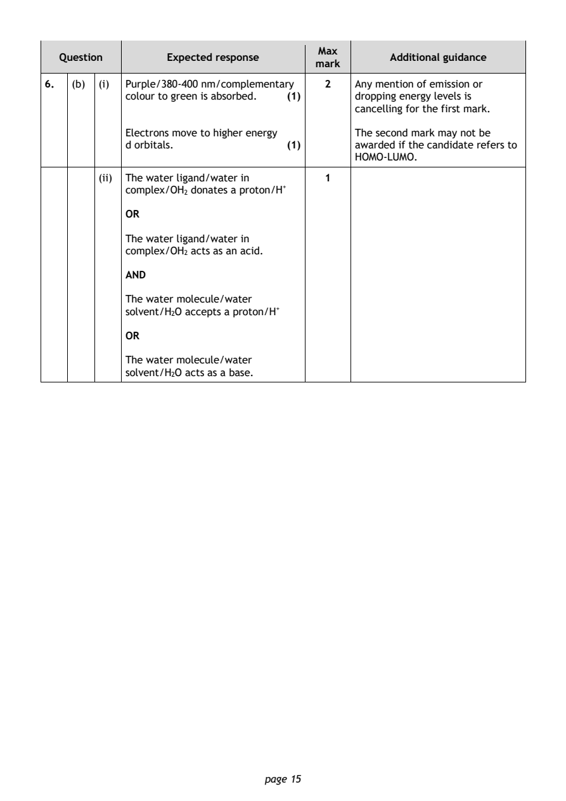
Selectable page text
Max
Question Expected response Additional guidance
mark
6. (b) (i) Purple/380-400 nm/complementary 2 Any mention of emission or
colour to green is absorbed. (1) dropping energy levels is
cancelling for the first mark.
Electrons move to higher energy The second mark may not be
d orbitals. (1) awarded if the candidate refers to
HOMO-LUMO.
(ii) The water ligand/water in 1
complex/OH₂ donates a proton/H⁺
OR
The water ligand/water in
complex/OH₂ acts as an acid.
AND
The water molecule/water
solvent/H₂O accepts a proton/H⁺
OR
The water molecule/water
solvent/H₂O acts as a base.
page 15PDF page 16
Paper 2, Question 7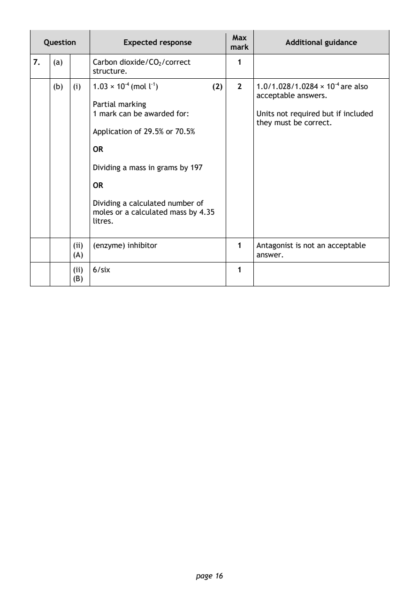
Selectable page text
Max
Question Expected response Additional guidance
mark
7. (a) Carbon dioxide/CO₂/correct 1
structure.
(b) (i) 1.03 × 10⁻⁴ (mol l⁻¹) (2) 2 1.0/1.028/1.0284 × 10⁻⁴ are also
acceptable answers.
Partial marking
1 mark can be awarded for: Units not required but if included
they must be correct.
Application of 29.5% or 70.5%
OR
Dividing a mass in grams by 197
OR
Dividing a calculated number of
moles or a calculated mass by 4.35
litres.
(ii) (enzyme) inhibitor 1 Antagonist is not an acceptable
(A) answer.
(ii) 6/six 1
(B)
page 16PDF page 17
Paper 2, Question 8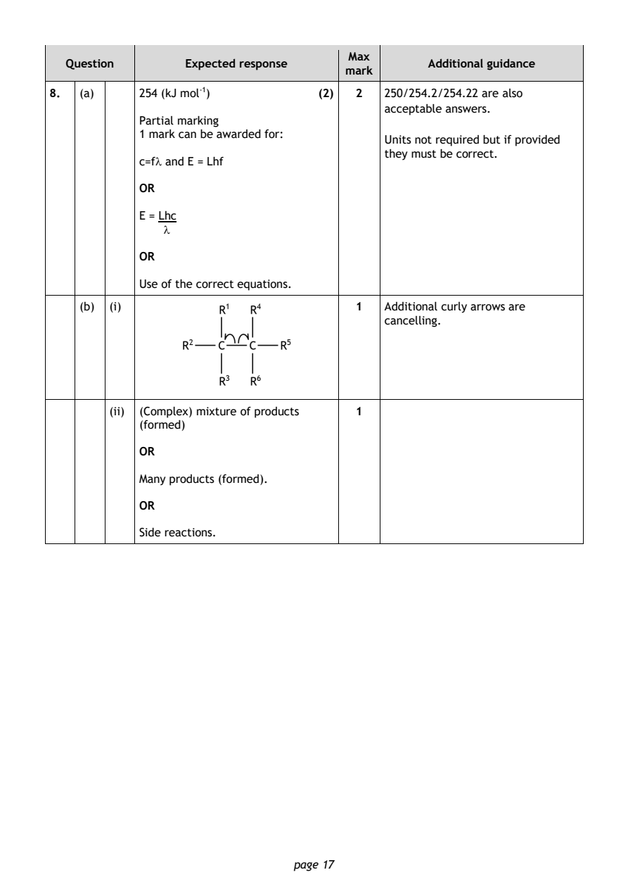
Selectable page text
Max
Question Expected response Additional guidance
mark
8. (a) 254 (kJ mol⁻¹) (2) 2 250/254.2/254.22 are also
acceptable answers.
Partial marking
1 mark can be awarded for:
Units not required but if provided
they must be correct.
c=fλ and E = Lhf
OR
E = Lhc
λ
OR
Use of the correct equations.
(b) (i) 1 Additional curly arrows are
cancelling.
(ii) (Complex) mixture of products 1
(formed)
OR
Many products (formed).
OR
Side reactions.
page 17PDF page 18
Paper 2, Question 9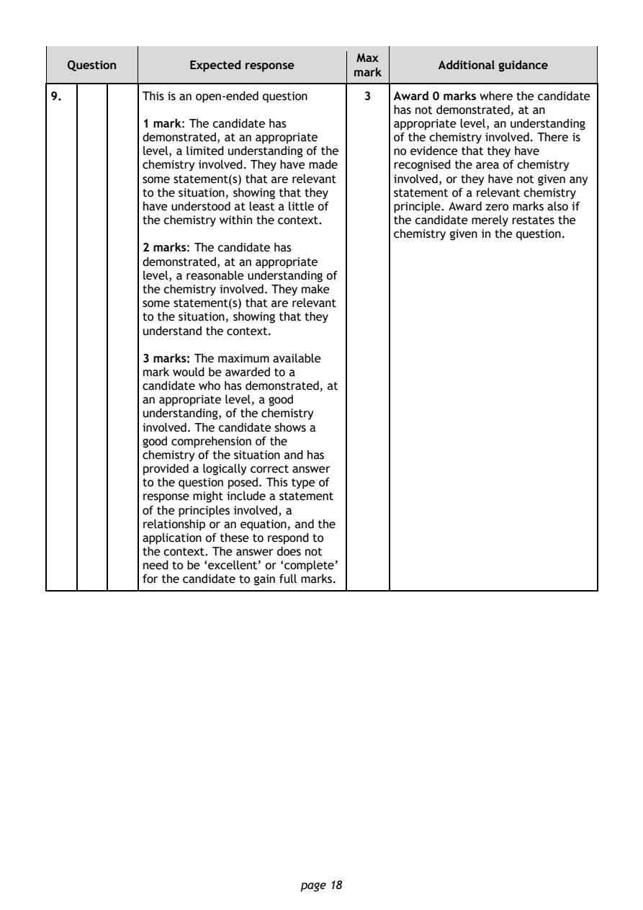
Selectable page text
Max
Question Expected response Additional guidance
mark
9. This is an open-ended question 3 Award 0 marks where the candidate
has not demonstrated, at an
1 mark: The candidate has appropriate level, an understanding
demonstrated, at an appropriate of the chemistry involved. There is
level, a limited understanding of the no evidence that they have
chemistry involved. They have made recognised the area of chemistry
some statement(s) that are relevant involved, or they have not given any
to the situation, showing that they statement of a relevant chemistry
have understood at least a little of principle. Award zero marks also if
the chemistry within the context. the candidate merely restates the
chemistry given in the question.
2 marks: The candidate has
demonstrated, at an appropriate
level, a reasonable understanding of
the chemistry involved. They make
some statement(s) that are relevant
to the situation, showing that they
understand the context.
3 marks: The maximum available
mark would be awarded to a
candidate who has demonstrated, at
an appropriate level, a good
understanding, of the chemistry
involved. The candidate shows a
good comprehension of the
chemistry of the situation and has
provided a logically correct answer
to the question posed. This type of
response might include a statement
of the principles involved, a
relationship or an equation, and the
application of these to respond to
the context. The answer does not
need to be ‘excellent’ or ‘complete’
for the candidate to gain full marks.
page 18PDF page 19
Paper 2, Question 10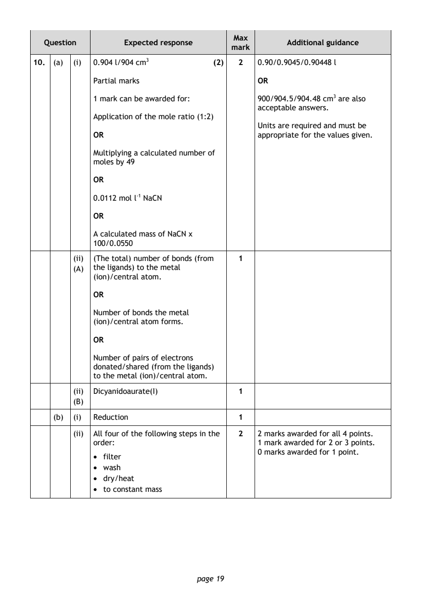
Selectable page text
Max
Question Expected response Additional guidance
mark
10. (a) (i) 0.904 l/904 cm³ (2) 2 0.90/0.9045/0.90448 l
Partial marks OR
1 mark can be awarded for: 900/904.5/904.48 cm³ are also
acceptable answers.
Application of the mole ratio (1:2)
Units are required and must be
OR appropriate for the values given.
Multiplying a calculated number of
moles by 49
OR
0.0112 mol l⁻¹ NaCN
OR
A calculated mass of NaCN x
100/0.0550
(ii) (The total) number of bonds (from 1
(A) the ligands) to the metal
(ion)/central atom.
OR
Number of bonds the metal
(ion)/central atom forms.
OR
Number of pairs of electrons
donated/shared (from the ligands)
to the metal (ion)/central atom.
(ii) Dicyanidoaurate(I) 1
(B)
(b) (i) Reduction 1
(ii) All four of the following steps in the 2 2 marks awarded for all 4 points.
order: 1 mark awarded for 2 or 3 points.
0 marks awarded for 1 point.
• filter
• wash
• dry/heat
• to constant mass
page 19PDF page 20
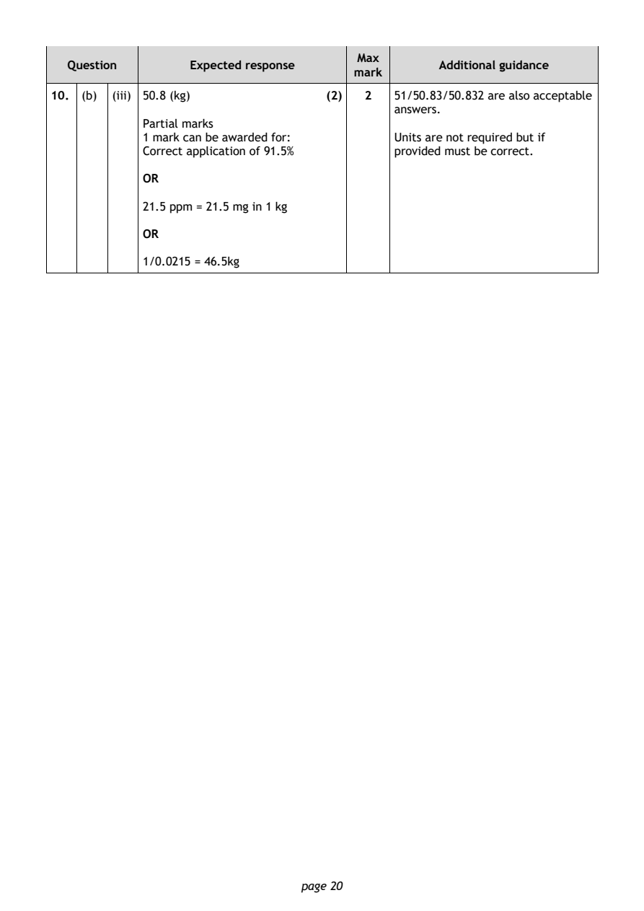
Selectable page text
Max
Question Expected response Additional guidance
mark
10. (b) (iii) 50.8 (kg) (2) 2 51/50.83/50.832 are also acceptable
answers.
Partial marks
1 mark can be awarded for: Units are not required but if
Correct application of 91.5% provided must be correct.
OR
21.5 ppm = 21.5 mg in 1 kg
OR
1/0.0215 = 46.5kg
page 20PDF page 21
Paper 2, Question 11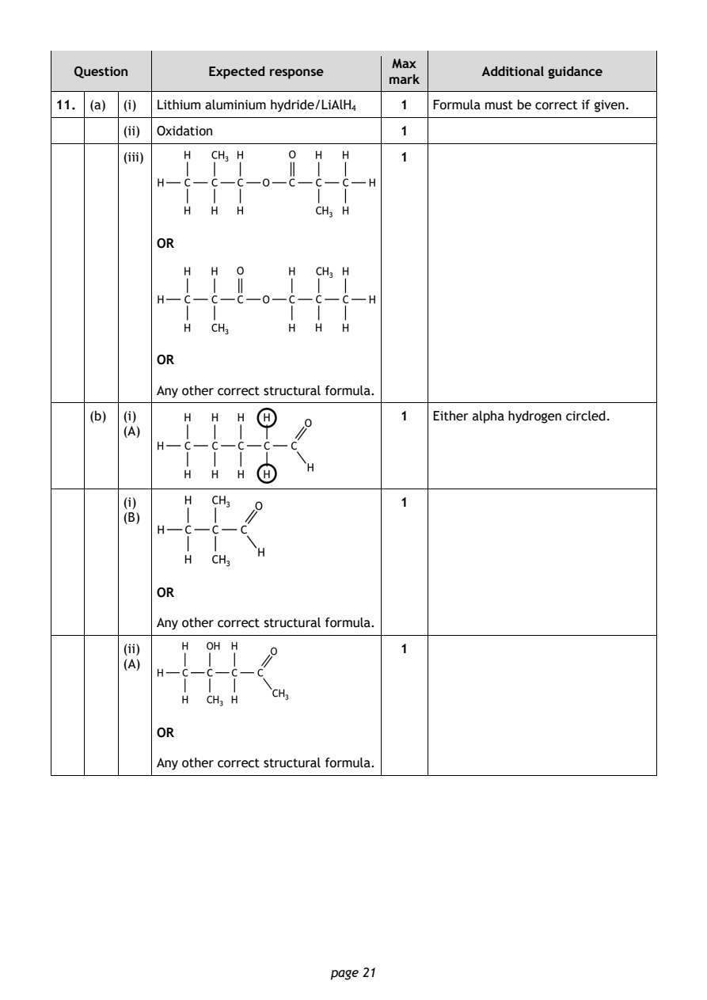
Selectable page text
Max
Question Expected response Additional guidance
mark
11. (a) (i) Lithium aluminium hydride/LiAlH₄ 1 Formula must be correct if given.
(ii) Oxidation 1
(iii) 1
OR
OR
Any other correct structural formula.
(b) (i) 1 Either alpha hydrogen circled.
(A)
(i) 1
(B)
OR
Any other correct structural formula.
(ii) 1
(A)
OR
Any other correct structural formula.
page 21PDF page 22
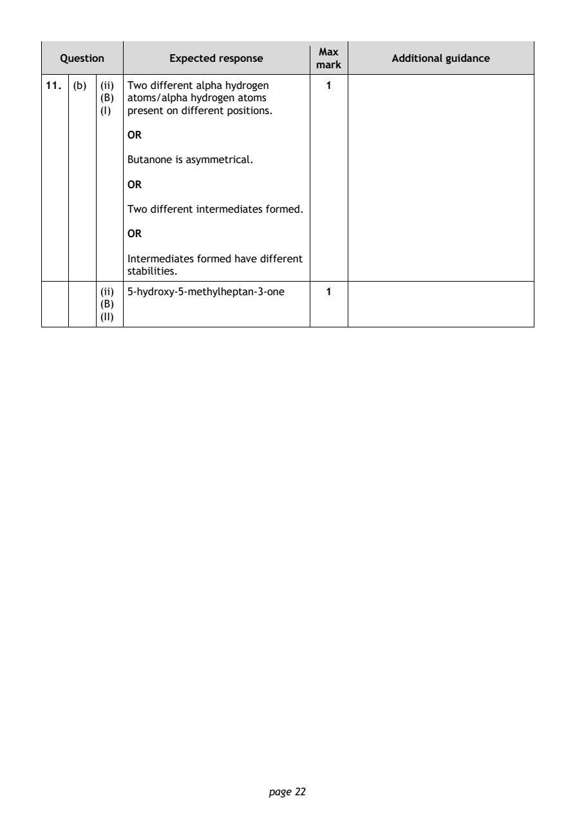
Selectable page text
Max
Question Expected response Additional guidance
mark
11. (b) (ii) Two different alpha hydrogen 1
(B) atoms/alpha hydrogen atoms
(I) present on different positions.
OR
Butanone is asymmetrical.
OR
Two different intermediates formed.
OR
Intermediates formed have different
stabilities.
(ii) 5-hydroxy-5-methylheptan-3-one 1
(B)
(II)
page 22PDF page 23
Paper 2, Question 12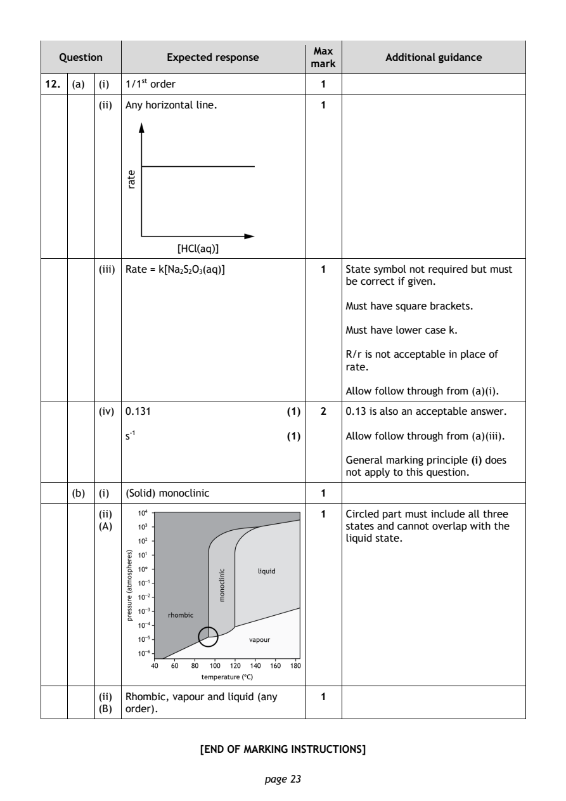
Selectable page text
Max
Question Expected response Additional guidance
mark
12. (a) (i) 1/1^{s}^{t} order 1
(ii) Any horizontal line. 1
(iii) Rate = k[Na₂S₂O₃(aq)] 1 State symbol not required but must
be correct if given.
Must have square brackets.
Must have lower case k.
R/r is not acceptable in place of
rate.
Allow follow through from (a)(i).
(iv) 0.131 (1) 2 0.13 is also an acceptable answer.
s⁻¹ (1) Allow follow through from (a)(iii).
General marking principle (i) does
not apply to this question.
(b) (i) (Solid) monoclinic 1
(ii) 1 Circled part must include all three
(A) states and cannot overlap with the
liquid state.
(ii) Rhombic, vapour and liquid (any 1
(B) order).
[END OF MARKING INSTRUCTIONS]
page 23